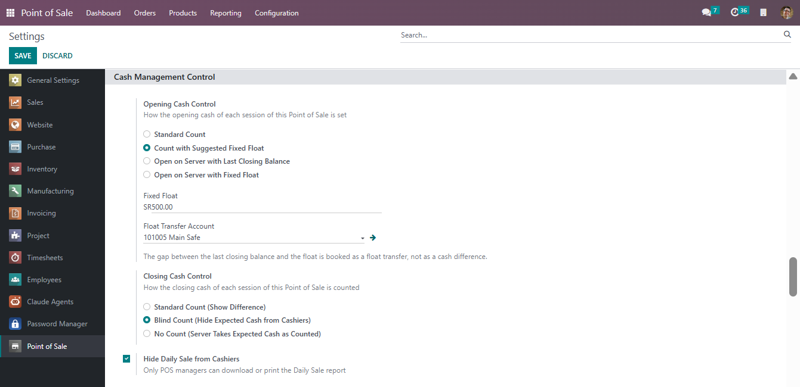
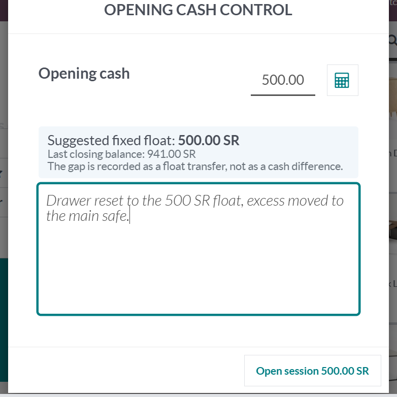
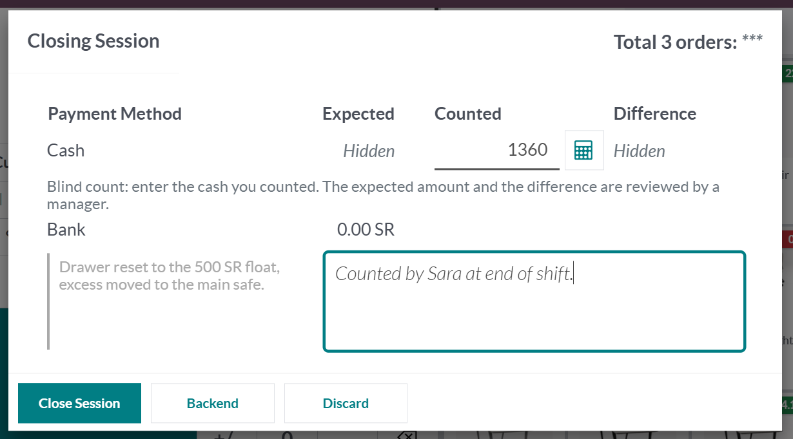
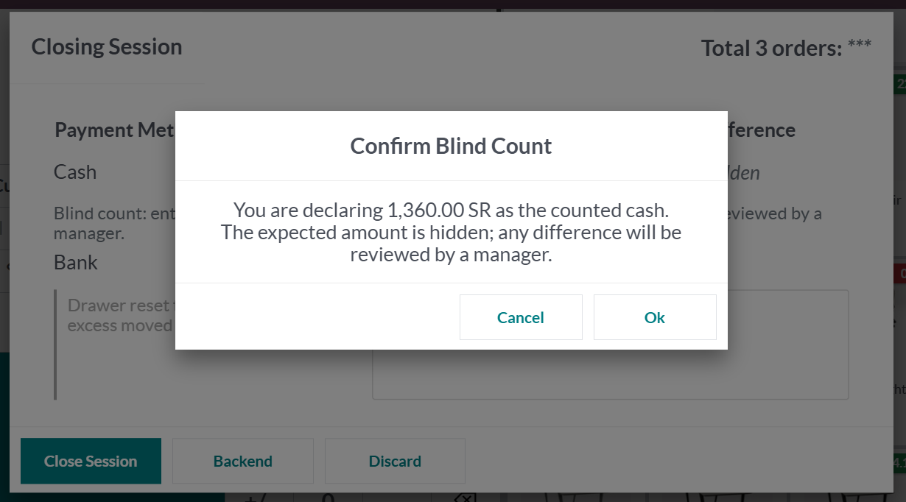
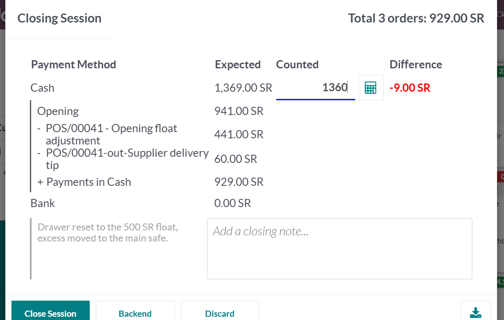
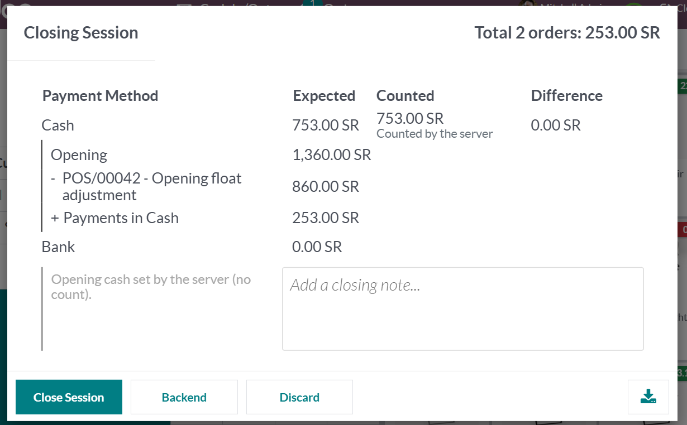
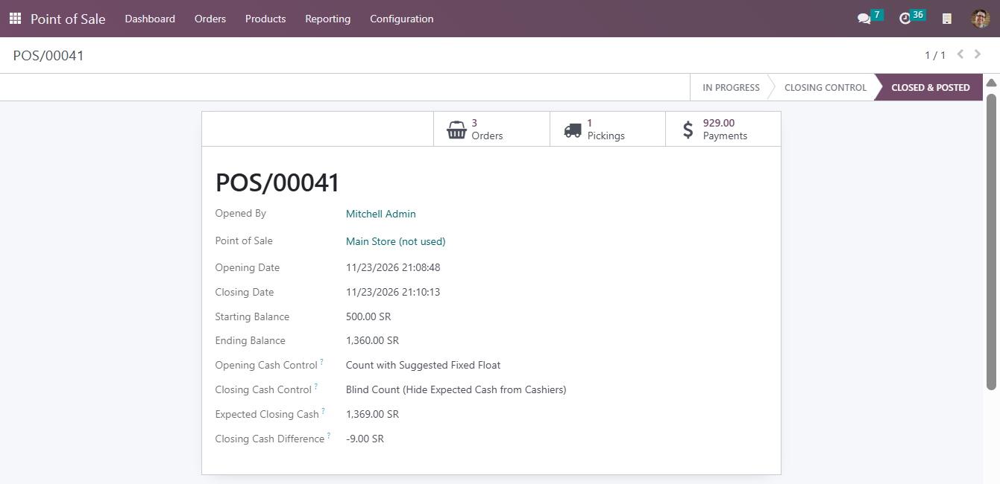
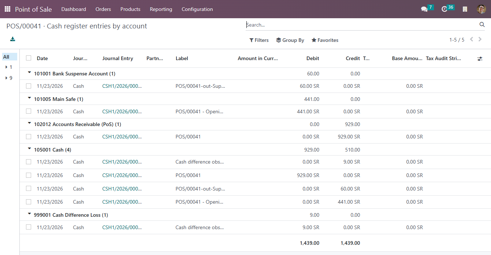

Decide, per Point of Sale, how the drawer is opened and how it is counted at closing: fixed float, opening on the server, blind count or no count. Every rule is enforced by the server and every cash movement lands in the right account.
Odoo’s cash control is one fixed flow for every shop. Real stores need different rules for different counters.
Four steps, no change to the way cashiers sell.
Screenshots come from an Odoo Enterprise demo database: a Main Store POS in SAR with a 500.00 SR float, a previous closing of 941.00 SR and the 101005 Main Safe account as float transfer account.
Point of Sale › Configuration › Settings, choose the shop, then the Cash Management Control section (shown when the POS has a cash payment method): Opening Cash Control, Fixed Float, Float Transfer Account, Closing Cash Control and Hide Daily Sale from Cashiers. Defaults keep standard Odoo behaviour, and the settings are locked while a session of that POS is running.

With Count with Suggested Fixed Float, the Opening Cash Control popup pre-fills the float and shows the Last closing balance. The cashier counts the drawer as usual. The 441.00 SR taken out to bring 941.00 SR back to the 500.00 SR float is booked as an Opening float adjustment, not as a loss; a counting gap against the float is reported in the session chatter, as Odoo 19 does for opening differences.

With Blind Count, a cashier sees Hidden instead of the expected cash and the difference, and *** instead of the session total. The opening, cash moves and cash payments breakdown is not sent to the cashier’s screen by the server at all. Before closing, a Confirm Blind Count dialog asks the cashier to confirm the declared amount.


The same blind-count session closed by a POS manager shows the full standard screen: expected 1,369.00 SR, the opening of 941.00 SR, the float adjustment, a cash out and the cash payments, with a difference of -9.00 SR. The Daily Sale download button stays available to managers.

Open on Server with Fixed Float or Open on Server with Last Closing Balance skips the opening popup: the session is already open when the POS loads. With No Count (Server Takes Expected Cash as Counted), the Counted column shows Counted by the server and the server ignores any amount sent from the POS, so the difference is always 0.00.

Point of Sale › Orders › Sessions: each cash-controlled session shows its Opening Cash Control and Closing Cash Control modes, Opened by Server and the Opening Float Transfer line when relevant, and, for POS managers only, Expected Closing Cash and Closing Cash Difference once closed.

The journal items of the session’s cash register, grouped by account: the float adjustment moves 441.00 SR from 105001 Cash to 101005 Main Safe, the cash out goes to the suspense account like any standard Cash In/Out, sales reach Accounts Receivable (PoS) and only the real counting gap of 9.00 SR reaches Cash Difference Loss.

Set per Point of Sale. Standard modes are the defaults.
Each of these is covered by code and, where possible, by an automated test.
No new groups: roles follow the standard Point of Sale groups.
| Who | Sees / can do |
|---|---|
| Point of Sale / User (cashier) | In Blind Count: no expected cash, breakdown, total or difference, either on screen or from the server. With Hide Daily Sale: no Daily Sale download or print, refused on the server. |
| Point of Sale / Administrator | Full closing screen in every mode, Daily Sale report, Expected Closing Cash and Closing Cash Difference on the session form, all settings. |
| pos_hr employee | The POS screen follows the employee’s manager or cashier role; server checks follow the logged-in Odoo user. |
| Multi-company | Settings are per Point of Sale; the float transfer account must belong to the POS company. |
| Odoo version | 19.0, Community and Enterprise |
| Depends on | point_of_sale, pos_hr (blind count also covers the per-employee closing breakdown) |
| Settings | Point of Sale › Configuration › Settings › Cash Management Control |
| Models extended | pos.config, pos.session, res.config.settings, report.point_of_sale.report_saledetails |
| POS frontend | OWL patch() on PosStore, OpeningControlPopup, ClosePosPopup, SaleDetailsButton and Navbar; settings travel with the session data of load_data and are cached in PosStore.processServerData(), no extra RPC |
| Core files | No core file modified; all changes through inheritance |
| Translations | English and Arabic (i18n/ar.po), plus a .pot template |
| Automated tests | 21 tests: defaults, every opening mode and its first-session edge case, blind and no-count closing, cash register and journal entry accuracy, Daily Sale access, settings lock, POS load payload |
| License | LGPL-3 |
Questions, a demo, or an adaptation to your own process? Get in touch.
✉ ibrahim.yahiah@gmail.com LinkedIn: Ibrahim YahiaAuthor: Ibrahim Yahia · License: LGPL-3